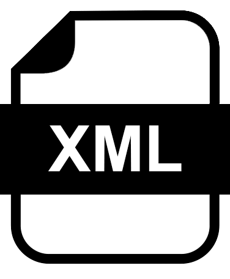
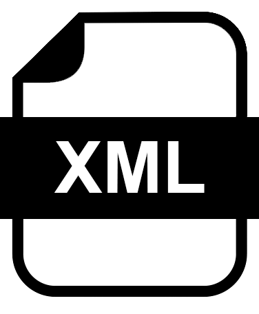

El archivo XML corresponde a su factura electrónica. El archivo PDF corresponde a la representación impresa de su factura electrónica.Si tiene problemas para visualizar su PDF le recomendamos descargar la última versión de ADOBE Reader aquí.
Si tiene problemas para visualizar su PDF le recomendamos descargar la última versión de Internet Explorer aquí.
Para visualizar su XML dé click en "obtener XML". Podrá guardarlo a su disco con la extensión TXT y abrirlo posteriormente con el Notepad o Block de notas.
Le recomendamos conservar su documento de pago y/o comprobante de pago, ya que para recuperar una factura ya elaborada y/o el archivo XML, es necesario ingresar el código de facturación, la fecha de pago y el RFC al que se facturó.
Paso 1
Paso 2
Paso 3
Paso 4
Paso 5
Emisión de Factura
Paso 5: Descargue o envíe su documento por correo electronico.
 

Enviar por correo:
Generar Nueva Factura